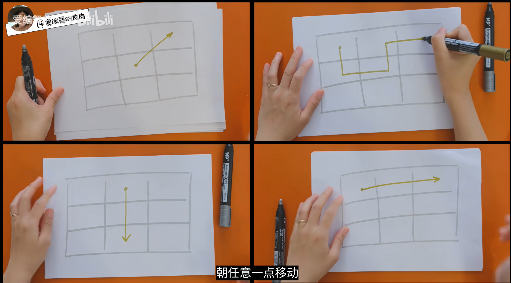
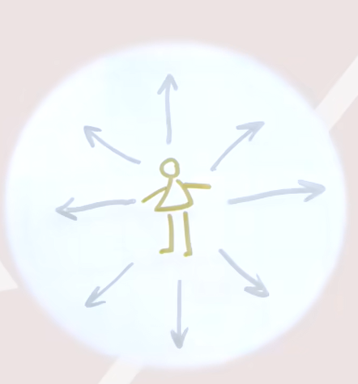
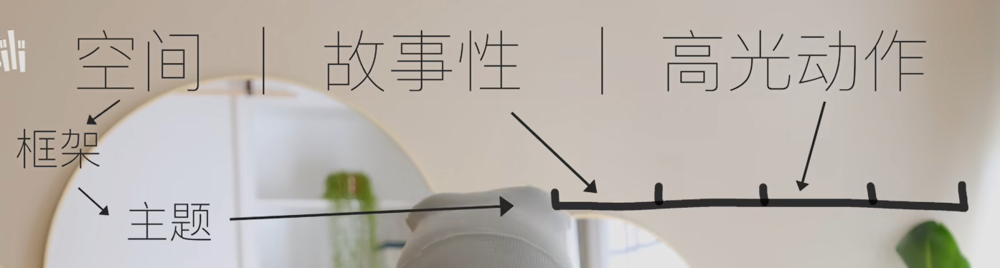

你你你你要跳舞吗？
跳舞的话那纯粹就是跳得自己开心，顺便为了减肥（主要目的）。因为是自娱自乐，所以就不关心什么基本功啥的，跳的开心就好，瘦下来的话可以尝试穿女装跳，更快乐？别恶心到自己就行。
这篇笔记同样也是做着开心，我没有任何实践经验（大学那会儿？填鸭法那能算记吗）就直接去学一些理论了，这样理论估计也学不透彻，更别提我喜欢BB了，可能会爆出来一堆错误言论，待实践中才能更明了。但我觉得这是正常的发展过程。
想学的第一首曲子是 CHEER UP! HEARTS UP!
但有个问题——我得记住舞蹈，总不能像大学那样一个舞蹈记一个学期吧？那太难受了。得找一种记住舞蹈的方式。
这个和学乐器记住曲子是类似的……分成各段（按小节？）去独立处理，然后连贯起来。但是这里需要“乐谱”，也就是说形式化地记忆舞蹈，这实际上就是说给舞蹈一个框架（实际上，是不断地设定（更小的）框架），或者说思维模型、心智模型吧。
这里学习一下这个视频的操作。
空间
第一点是记住舞蹈的“空间”。
记住“地方”
舞蹈会“闪转腾挪”，在舞台上不断进行移动，但可以把舞台去进行切分，把舞台划分成九宫格，然后舞者的移动就变为在九宫格上的一个路径。

但这并不足够——舞者的身体是有朝向的，我们把舞者的身体朝向简化为八向（用游戏的话来说：w，a，s，d，wa，wd，sd，sa）：

此外，舞者的姿态可以分为三个高度——上中下，上是直立，中是躬身屈膝，下是蹲姿。
朝向，移动，高度是可以任意组合的——我面向任意一个方向时，我可以以任意高度向向任意一个方向移动，也可以在同一地点，以不同的高度和朝向做动作。
这意味着，如果舞蹈需要位移，位移路径也需要包含任意子路径时舞者的身体朝向和高度（但这一般不是问题，一般不会乱动，特别是SOLO的舞蹈）
这样为舞蹈建模，是一种空间上的建模，人脑对于空间的记忆强于序列记忆，因此，与其按顺序记动作，不如先记空间。
上面的建模是第一步——舞蹈的整体的一个大的框架，它相对来说还是抽象的，没有触及到具体动作，只触及到了大的姿态和位移。
下面把这里的“地方”称作空间（其实这么说挺合理的——舞者“施展的空间”）——在舞蹈中，舞者不断变换自己的空间，同时在空间里进行特定的动作，空间就是对舞者提出一定的约束（朝向，高度，方位），但同时又允许舞者进行施展的地方。
主题动作
上面的方法处理了舞者的空间，我们可以基于此将舞蹈进行分段，然后去处理每个段落的情况，也就是说，分治法。舞蹈动作的快速记忆，靠的就是尽可能缩小记忆范围。
这里提出一个观点——无论编舞是先决定舞者的动作，再确定舞者的空间，还是先决定空间再决定动作，动作和空间是相互关联的——特定的空间会限制使用特定的动作（因为如果无法限制的话我们就不认为在同一个空间里了，从而分两段了hh），这时候的这个特定的动作就称为主题动作。
主题动作仍然是抽象的——这个空间内能够施展的动作绝对不止一种——主题动作只需要大概地能够描述这段的动作即可，我们用一段话去表示主题动作，如“侧向手部动作”，“前进脚+手”（感觉好像太抽象了这个）
注意到这里的暧昧性——我定了空间后再定动作，但定空间也是根据动作来的，这里显然会需要经验去参与作用，以及反复的“磨合”。但先不提这个暧昧性（说到底我现在只是个学生，而且是先看理论课再实践的那种，等实践的时候再反刍）。
注意到这里的发展脉络——连续的，无穷变化的舞蹈，先使用九宫格去将空间进行形式化（我愿称之为概括），再将其动作进行概括化，基于这些心智模型，我们就可以在脑子里建立起舞蹈的初步和整体的印象。这个初步印象就是我们的拐杖，我们可以依赖它进行具体的记忆，而且更难犯根本性的错误。
故事化
要手脚协同记忆？因为这应该是一个整体，有机地结合的，不应该分开。
都说舞蹈最初起源是对劳动的模仿，现代舞虽然更加抽象，但应当也有此意义，我们可以尝试对动作赋予故事来帮助记忆，简单来说就是，脑补。
关于故事化这点……我就不知道了，具体问题具体分析吧。
高光动作
舞蹈中，某些动作如果给人留下强烈的印象，那就可以把它当作地标 landmark，有了地标代表什么呢？在画画中就可以根据地标去确定其他具体点的位置了，比如我确定了躯干的地标，我就更容易画出四肢；在语文课背课文的时候，某些有趣的段落也会成为地标，这时候我们做的就是补足地标前后的部分（以及地标和地标之间的部分）。地标就是锚点，帮助我们进行标定。
通常，地标动作是最有张力的，是编舞者受音乐启发，最早迸发出来的灵感动作（这里称为高光动作），这动作其实也是编舞者的锚点不是吗？这样的灵感动作通常会重复使用，重复变化。要说典型的话，就不得不想到浴霸的daisuke了。
这里或许也可以称为典型动作之类的。

总而言之，这里有三个记忆法——空间，故事化，高光动作。空间定出舞蹈的框架，定出各段的主题，然后对各段，去使用故事化将它形象记忆，以及使用高光动作作为记忆的锚点，最终能够记住舞蹈的具体动作。
但这只是记住动作，还要知道各段是如何衔接（衔接很重要，对观感影响很大，这决定看起来是连贯流畅还是邯郸学步，东施效颦，在脑子里先把东西都推演一遍或许很重要），每个动作是如何正确发力。
TODO 再去看这个视频 https://www.bilibili.com/video/BV1cN4y1m7Wh/，不过在这之前先实践实践吧。
本博客所有文章除特别声明外，均采用 CC BY-NC-SA 4.0 协议 ，转载请注明出处！